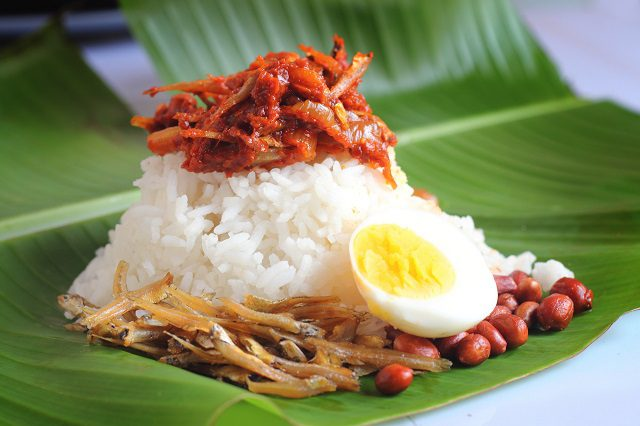

Nasi Lemak Recipe
Nasi lemak is delicious Malaysian coconut rice, drizzled with an anchovy and hot chile sauce, then topped with fried anchovies, fried peanuts, sliced cucumber, and hard-boiled egg.
Ingredients:
- coconut milk steamed rice
- 2 cups rice
- 3 screwpine leaves (tie them into a knot as shown above)
- salt to taste
- 5.6 oz (158g) coconut milk (150 ml-180 ml)
- some water
- 1 cup water
- tamarind pulp (size of a small ping pong ball)
- 1/2 red onion
- 1 cup ikan bilis (dried anchovies)
- 1 clove garlic
- 4 shallots
- 10 dried chillies
- 1 teaspoon belacan (prawn paste)
- 1/4 teaspoon salt
- 1 tablespoon sugar
- 2 hard boiled eggs, cut into half
- 3 small fish (sardines or smelt fish)
- 1 small cucumber, cut into slices and then quartered
Instructions:
- Just like making steamed rice, rinse your rice and drain. Add the coconut milk, a pinch of salt, and some water. Add the pandan leaves into the rice and cook your rice.
- Rinse the dried anchovies and drain the water. Fry the anchovies until they turn light brown and put aside.
- Pound the prawn paste together with shallots, garlic, and deseeded dried chilies with a mortar and pestle. You can also grind them with a food processor. Slice the red onion into rings.
- Soak the tamarind pulp in water for 15 minutes. Squeeze the tamarind constantly to extract the flavor into the water. Drain the pulp and save the tamarind juice.
- Heat some oil in a pan and fry the spice paste until fragrant. Add in the onion rings. Add in the ikan bilis and stir well. Add tamarind juice, salt, and sugar. Simmer on low heat until the gravy thickens. Set aside.
- Clean the small fish, cut them into half and season with salt. Deep fry. Cut the cucumber into slices and then quartered into four small pieces. Dish up the steamed coconut milk rice and pour some sambal ikan bilis on top of the rice. Serve with fried fish, cucumber slices, and hard-boiled eggs.